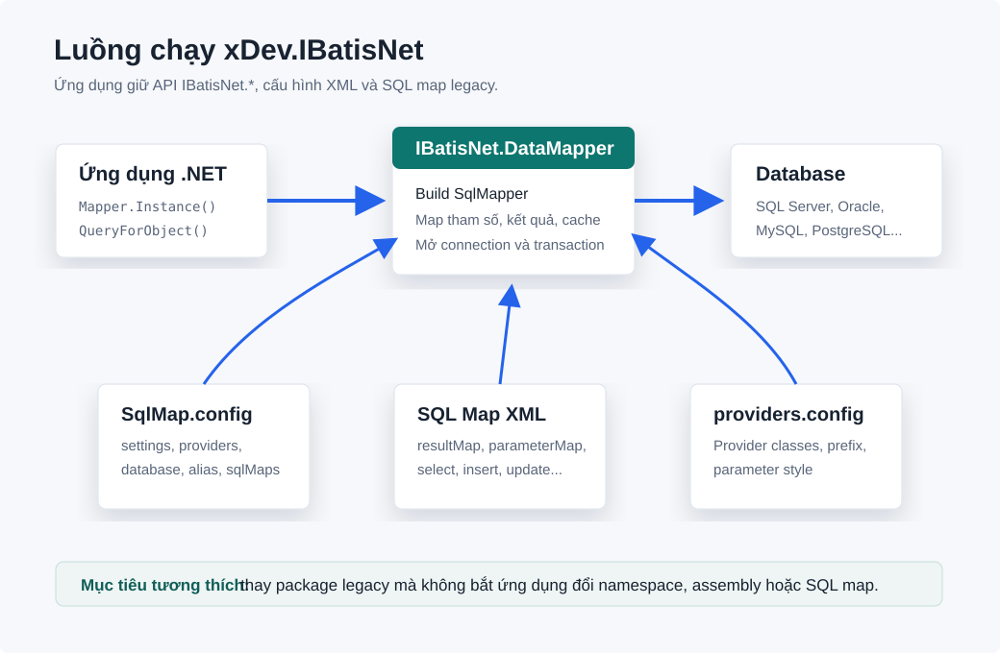
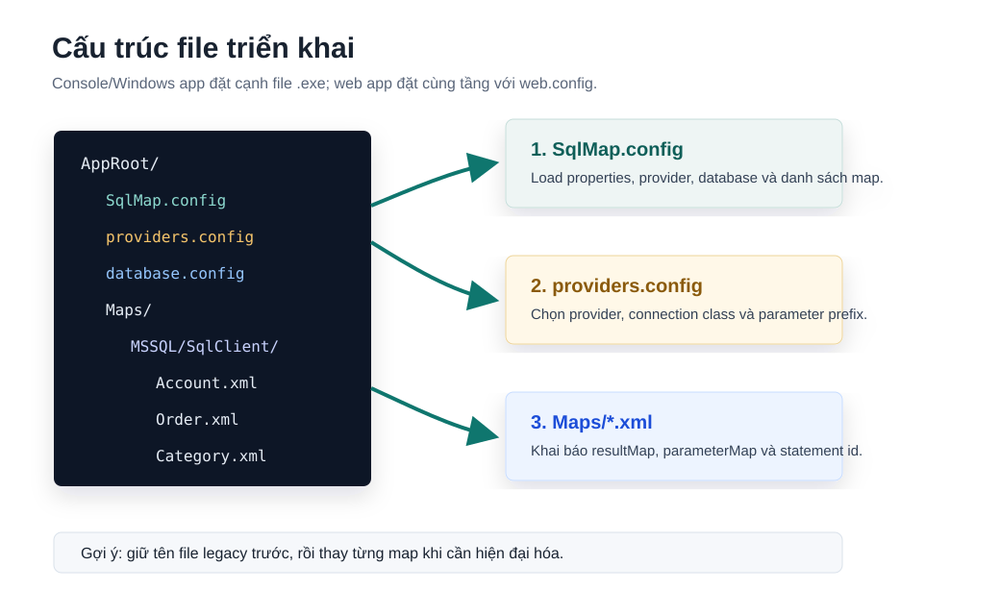
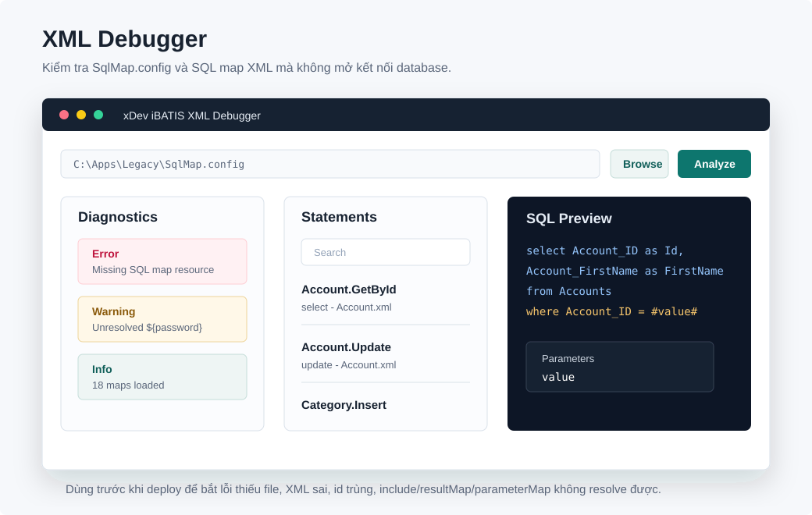

Compatibility-first iBATIS.NET DataMapper
xDev.IBatisNet
Package duy trì iBATIS.NET DataMapper 1.6.2 cho hệ thống legacy của xDev:
giữ namespace IBatisNet.*, giữ định dạng SqlMap.config,
providers.config, các file SQL map XML, đồng thời có asset cho .NET Framework
và .NET 10.

Tổng quan
xDev.IBatisNet là bản tiếp quản thực dụng của Apache iBATIS.NET DataMapper. Mục tiêu chính không phải viết lại ORM, mà là giúp ứng dụng cũ thay package đang dùng bằng package mới mà không phải sửa hàng loạt SQL map.
Khi nào nên dùng
- Ứng dụng đang có
SqlMap.config,providers.configvà nhiều fileMaps/*.xml. - Code đang gọi
IBatisNet.DataMapper.Mapper,ISqlMapper,QueryForObject,QueryForList,Insert,Update,Delete. - Cần nâng cấp packaging/build nhưng chưa muốn đổi định dạng XML map hoặc rewrite sang ORM khác.
Nguyên tắc tương thích
- Giữ assembly name
IBatisNet.CommonvàIBatisNet.DataMapper. - Giữ namespace
IBatisNet.*để source code cũ không đổi. - Giữ XML format của iBATIS.NET:
sqlMapConfig,sqlMap,resultMap,parameterMap, dynamic tags. - Ưu tiên sửa nhỏ, có thể kiểm chứng, thay vì refactor lớn.
Cài đặt
Package NuGet có id xDev.IBatisNet. Bên trong package vẫn chứa assembly legacy
IBatisNet.Common.dll và IBatisNet.DataMapper.dll.
.NET CLI
dotnet add package xDev.IBatisNet --version 1.6.2-xdev.9PackageReference
<ItemGroup>
<PackageReference Include="xDev.IBatisNet" Version="1.6.2-xdev.9" />
</ItemGroup>Target framework được đóng gói
| Target | Assembly chính | Ghi chú |
|---|---|---|
net40, net452, net472, net48 |
IBatisNet.Common, IBatisNet.DataMapper |
Dành cho ứng dụng legacy. Không ép host app đổi logging package. |
net10.0 |
IBatisNet.Common, IBatisNet.DataMapper, IBatisNet.Common.Logging.Log4Net |
Dùng Castle.Core, log4net và System.Configuration.ConfigurationManager bản hiện đại. |
Releases
Bản phát hành package được điều khiển bằng GitHub Actions để version, NuGet package, XML Debugger portable build, release note artifact và GitHub Release dùng chung một nguồn dữ liệu.
Production
Push tag dạng v1.6.2-xdev.10 để publish lên NuGet.org và GitHub Packages,
sau đó tạo hoặc cập nhật GitHub Release tương ứng.
git tag v1.6.2-xdev.10
git push origin v1.6.2-xdev.10Test prerelease
Push tag dạng test-v1.6.2-xdev.10 để publish lên NuGet test gallery
và GitHub Packages. GitHub Release sẽ được đánh dấu prerelease.
git tag test-v1.6.2-xdev.10
git push origin test-v1.6.2-xdev.10Tự động tăng version
Khi push vào master, workflow tạo prerelease version từ version nền trong
xDev.IBatisNet.nuspec và commit count hiện tại, rồi publish lên GitHub Packages
và tạo GitHub prerelease tự động với tag dạng ci-v1.6.2-xdev.37.
Khi chạy workflow thủ công, có thể để trống package version để dùng cùng cơ chế tự động.
Release notes tự đồng bộ
- Workflow sinh release notes từ git history kể từ tag package gần nhất.
- Nội dung đó được ghi vào
<releaseNotes>trong nuspec trước khi pack. - Cùng file release notes được upload làm artifact và dùng làm body của GitHub Release.
- File portable Windows x64 của XML Debugger được attach cùng package release.
master tạo prerelease tự động. Tag v* vẫn là production
release, còn tag test-v* là test prerelease có kiểm soát.
Quick Start
Ví dụ dưới đây dùng SQL Server và domain Account. Với Oracle, MySQL,
PostgreSQL hoặc ODBC/OleDb, phần khác biệt chính nằm ở provider và SQL dialect trong map.
1. Đặt file cấu hình

web.config.AppRoot/
SqlMap.config
providers.config
database.config
Maps/
MSSQL/
SqlClient/
Account.xml2. Tạo domain model
public sealed class Account
{
public int Id { get; set; }
public string FirstName { get; set; }
public string LastName { get; set; }
public string EmailAddress { get; set; }
}3. Khai báo SqlMap.config
<?xml version="1.0" encoding="utf-8" ?>
<sqlMapConfig xmlns="http://ibatis.apache.org/dataMapper">
<properties resource="database.config"/>
<settings>
<setting useStatementNamespaces="true"/>
<setting cacheModelsEnabled="true"/>
<setting validateSqlMap="false"/>
<setting useReflectionOptimizer="true"/>
</settings>
<providers resource="providers.config"/>
<database>
<provider name="sqlServer4.0"/>
<dataSource
name="iBatisNet"
connectionString="data source=${datasource};database=${database};user id=${userid};password=${password}"/>
</database>
<alias>
<typeAlias alias="Account" type="MyApp.Domain.Account, MyApp"/>
</alias>
<sqlMaps>
<sqlMap resource="Maps/MSSQL/SqlClient/Account.xml"/>
</sqlMaps>
</sqlMapConfig>4. Tạo SQL map
<?xml version="1.0" encoding="utf-8" ?>
<sqlMap namespace="Account"
xmlns="http://ibatis.apache.org/mapping">
<resultMaps>
<resultMap id="account-result" class="Account">
<result property="Id" column="Account_ID"/>
<result property="FirstName" column="Account_FirstName"/>
<result property="LastName" column="Account_LastName"/>
<result property="EmailAddress" column="Account_Email"/>
</resultMap>
</resultMaps>
<statements>
<select id="GetById" parameterClass="int" resultMap="account-result">
select Account_ID, Account_FirstName, Account_LastName, Account_Email
from Accounts
where Account_ID = #value#
</select>
</statements>
</sqlMap>5. Gọi từ code
using IBatisNet.DataMapper;
ISqlMapper mapper = Mapper.Instance();
var account = (Account)mapper.QueryForObject("Account.GetById", 1);useStatementNamespaces="false", gọi statement bằng GetById.
Nếu bật namespace, gọi bằng Account.GetById.
Cấu hình
SqlMap.config là file gốc. Nó load property, provider, database, alias,
type handler và danh sách SQL map.
database.config
<settings>
<add key="userid" value="IBatisNet" />
<add key="password" value="test" />
<add key="database" value="IBatisNet" />
<add key="datasource" value="(local)\NetSDK" />
<add key="directory" value="Maps" />
<add key="useStatementNamespaces" value="true" />
</settings>providers.config cho SQL Server
<providers xmlns="http://ibatis.apache.org/providers">
<clear/>
<provider
name="sqlServer4.0"
enabled="true"
assemblyName="System.Data, Version=4.0.0.0, Culture=neutral, PublicKeyToken=b77a5c561934e089"
connectionClass="System.Data.SqlClient.SqlConnection"
commandClass="System.Data.SqlClient.SqlCommand"
parameterClass="System.Data.SqlClient.SqlParameter"
parameterDbTypeClass="System.Data.SqlDbType"
parameterDbTypeProperty="SqlDbType"
dataAdapterClass="System.Data.SqlClient.SqlDataAdapter"
commandBuilderClass="System.Data.SqlClient.SqlCommandBuilder"
usePositionalParameters="false"
useParameterPrefixInSql="true"
useParameterPrefixInParameter="true"
parameterPrefix="@"
allowMARS="false" />
</providers>Settings quan trọng
| Setting | Ý nghĩa | Gợi ý |
|---|---|---|
useStatementNamespaces |
Thêm namespace của file map vào statement id. | Bật nếu muốn tránh trùng id giữa nhiều map. |
cacheModelsEnabled |
Cho phép dùng <cacheModel>. |
Bật khi map legacy đã khai báo cache. |
validateSqlMap |
Validate XML theo schema. | Tắt khi map cũ có extension/khác biệt nhỏ; bật ở môi trường kiểm thử nếu muốn siết chặt. |
useReflectionOptimizer |
Dùng optimizer cho object mapping. | Giữ theo cấu hình legacy trước, chỉ đổi khi gặp lỗi runtime. |
SQL Map XML
SQL map định nghĩa cách biến row thành object và cách biến object thành tham số SQL. Đây là phần nên giữ ổn định nhất khi thay package.
resultMap
<resultMap id="account-result" class="Account">
<result property="Id" column="Account_ID"/>
<result property="FirstName" column="Account_FirstName"/>
<result property="EmailAddress" column="Account_Email" nullValue="no_email@provided.com"/>
</resultMap>parameterMap
<parameterMap id="update-params" class="Account">
<parameter property="FirstName" />
<parameter property="LastName" />
<parameter property="EmailAddress" nullValue="no_email@provided.com"/>
<parameter property="Id" />
</parameterMap>Inline parameter
<update id="UpdateAccount" parameterClass="Account">
update Accounts set
Account_FirstName = #FirstName#,
Account_LastName = #LastName#,
Account_Email = #EmailAddress,type=string,dbType=Varchar,nullValue=no_email@provided.com#
where Account_ID = #Id#
</update>#Property# tạo database parameter. $Property$ là text substitution
trực tiếp vào SQL, chỉ dùng cho giá trị đã whitelist như tên cột sort hoặc tên bảng nội bộ.
Dynamic SQL
<select id="SearchAccounts" parameterClass="Account" resultMap="account-result">
select Account_ID, Account_FirstName, Account_LastName, Account_Email
from Accounts
<dynamic prepend="where">
<isGreaterThan prepend="and" property="Id" compareValue="0">
Account_ID = #Id#
</isGreaterThan>
<isNotEmpty prepend="and" property="FirstName">
Account_FirstName = #FirstName#
</isNotEmpty>
</dynamic>
</select>include fragment
<sql id="activeWhere">
where IsActive = 1
</sql>
<select id="GetActiveAccounts" resultMap="account-result">
select * from Accounts
<include refid="activeWhere"/>
</select>API sử dụng
Hầu hết ứng dụng chỉ cần Mapper.Instance() hoặc DomSqlMapBuilder
để lấy ISqlMapper, sau đó gọi statement theo id.
Singleton mapper
ISqlMapper mapper = Mapper.Instance();
Account account = (Account)mapper.QueryForObject("Account.GetById", 1);
IList accounts = mapper.QueryForList("Account.GetAll", null);
object newId = mapper.Insert("Account.Insert", account);
int rows = mapper.Update("Account.Update", account);
int deleted = mapper.Delete("Account.Delete", account);Configure từ file cụ thể
using IBatisNet.DataMapper.Configuration;
var builder = new DomSqlMapBuilder();
ISqlMapper mapper = builder.Configure("SqlMap.config");Transaction
ISqlMapper mapper = Mapper.Instance();
try
{
mapper.BeginTransaction();
mapper.Insert("Account.Insert", account);
mapper.Update("Account.Update", account);
mapper.CommitTransaction();
}
catch
{
mapper.RollBackTransaction();
throw;
}Generic API
Với build có symbol dotnet2, interface có thêm các overload generic như
QueryForObject<T>, QueryForList<T> và
QueryForDictionary<K,V>.
Tính năng nâng cao
Cache model
<cacheModels>
<cacheModel id="account-cache" implementation="MEMORY">
<flushInterval hours="24"/>
<flushOnExecute statement="Account.Update"/>
<property name="Type" value="Weak"/>
</cacheModel>
</cacheModels>
<select id="GetCachedAccounts" resultMap="account-result" cacheModel="account-cache">
select * from Accounts order by Account_ID
</select>Type handler
<alias>
<typeAlias alias="OuiNonBool"
type="MyApp.Mapping.OuiNonBoolTypeHandlerCallback, MyApp"/>
</alias>
<typeHandlers>
<typeHandler type="bool" dbType="Varchar" callback="OuiNonBool"/>
</typeHandlers>selectKey sau insert
<insert id="InsertCategory" parameterClass="Category">
<selectKey property="Id" type="post" resultClass="int">
select SCOPE_IDENTITY() as value
</selectKey>
insert into Categories (Category_Name, Category_Guid)
values (#Name#, #Guid:UniqueIdentifier#)
</insert>Stored procedure
<procedure id="InsertAccountViaStoreProcedure" parameterMap="insert-params">
ps_InsertAccount
</procedure>XML Debugger
Repo có tool desktop Avalonia XDev.IBatisNet.XmlDebugger để đọc
SqlMap.config và các SQL map XML. Mặc định tool chỉ phân tích XML; phần
explain plan là thao tác opt-in và chỉ chạy cho câu đọc dữ liệu.

SqlMap.config, chọn working root nếu cần, bấm Analyze để xem diagnostics, map files và statement inventory.Chạy local
dotnet run --project tools\XDev.IBatisNet.XmlDebugger\XDev.IBatisNet.XmlDebugger.csproj -c ReleaseTool kiểm tra gì
- Thiếu
SqlMap.config,propertieshoặcsqlMapresource. - XML không hợp lệ ở file config hoặc SQL map.
- Placeholder
${...}không resolve được. - Statement id trùng giữa các map đã load.
- Thiếu
resultMap,parameterMaphoặc<include refid="...">nội bộ. - Danh sách statement
select,insert,update,delete,statement,procedure. - Tham số lấy từ token
#...#và$...$. - Preview SQL đã resolve
<include>, dynamic tag phổ biến và parameter placeholder theo provider. - Export SQL preview cho statement đang chọn hoặc toàn bộ map đã load.
- Chạy explain plan cho câu
select/withđể xem scan, missing index hoặc dấu hiệu tối ưu hóa rõ ràng.
Preview và explain plan
Tab SQL Preview cho phép nhập tham số mẫu theo dạng Name=value.
Tool dùng các giá trị này để bật/tắt dynamic SQL phổ biến như isNotEmpty,
isEqual, isGreaterThan, rồi chuyển #...# thành parameter
đúng prefix của provider trong providers.config.
Tab Explain Plan chỉ chạy kế hoạch thực thi cho câu đọc dữ liệu, không chạy
trực tiếp các câu insert, update, delete. SQL Server,
PostgreSQL, MySQL và SQLite-style provider được hỗ trợ khi assembly provider có sẵn trong process.
Publish bản portable Windows
dotnet publish tools\XDev.IBatisNet.XmlDebugger\XDev.IBatisNet.XmlDebugger.csproj `
-c Release `
-r win-x64 `
--self-contained true `
/p:PublishSingleFile=true `
/p:IncludeNativeLibrariesForSelfExtract=true `
-o artifacts\xml-debugger\win-x64Nâng cấp từ legacy IBatisNet
Cách an toàn nhất là thay package trước, giữ nguyên file XML, chạy smoke test, sau đó mới xử lý từng map có vấn đề.
- Chụp lại version package/DLL IBatisNet hiện tại trong ứng dụng.
- Thêm package
xDev.IBatisNetvào một nhánh riêng. - Giữ nguyên
SqlMap.config,providers.config,database.configvà thư mục map. - Build ứng dụng và xử lý binding redirect nếu host app yêu cầu.
- Chạy XML Debugger trên bộ map thực tế.
- Chạy smoke test cho các statement quan trọng: login, danh sách chính, insert/update/delete, stored procedure.
- So sánh connection string, provider name, statement namespace và logging output với bản cũ.
- Release theo từng ứng dụng hoặc từng module, có đường rollback package rõ ràng.
Lưu ý .NET 10
- Session store dựa trên remoting
CallContextđược thay bằng hướngAsyncLocal. - COM+ transaction cũ được thay bằng
System.Transactions.TransactionScope. - Serializable cache cloning dùng
DataContractSerializerthay choBinaryFormatter. - Các phần phụ thuộc
System.Webkhông nằm trong build .NET 10.
GitHub Pages và domain
Site này được đặt trong thư mục docs/ để GitHub Pages có thể publish trực tiếp.
File docs/CNAME đã đặt domain là ibatisnet.xdev.asia.
Thiết lập trong GitHub
- Vào repository
tdduydev/xDev.IBatisNet. - Mở Settings → Pages.
- Chọn source là branch publish, folder
/docs. - Custom domain nhập
ibatisnet.xdev.asia. - Bật Enforce HTTPS sau khi GitHub cấp certificate.
DNS gợi ý
Type: CNAME
Name: ibatisnet
Value: tdduydev.github.ioXử lý lỗi thường gặp
| Lỗi | Nguyên nhân hay gặp | Cách xử lý |
|---|---|---|
SqlMap.config was not found |
File không nằm đúng application root. | Đặt cạnh file .exe với console/desktop app, hoặc cùng tầng web.config với web app. |
| Không tìm thấy statement id | Bật/tắt useStatementNamespaces không khớp cách gọi. |
Nếu bật namespace, gọi Namespace.StatementId; nếu tắt, gọi StatementId. |
Không resolve được ${...} |
Thiếu key trong database.config hoặc properties file sai đường dẫn. |
Chạy XML Debugger, kiểm tra tab Properties và warning placeholder. |
| SQL parameter sai prefix | providers.config không đúng provider hoặc positional parameter. |
Kiểm tra parameterPrefix, usePositionalParameters, useParameterPrefixInSql. |
| Map object thiếu field/property | resultMap trỏ sai property hoặc alias class sai assembly. |
Kiểm tra typeAlias, tên property, visibility và column alias trong SQL. |
| Stored procedure không chạy | Provider không hỗ trợ cú pháp hiện tại hoặc parameter map sai thứ tự. | So sánh với map legacy đang chạy, kiểm tra parameterMap và provider positional mode. |